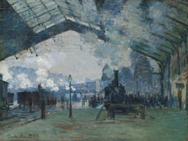

<!-- @dsCard group="Gallery" height=500 subtitle="Image, five swatches, title, caption" -->
<div style="display:grid;grid-template-columns:repeat(2,minmax(0,280px));gap:32px;padding:24px;background:var(--wall)">
  <a class="abc-card" href="#">
    
    <span class="abc-card__swatches" aria-label="Palette"><span style="background:#322C30"></span><span style="background:#335E4A"></span><span style="background:#AFD1CF"></span><span style="background:#8BB881"></span><span style="background:#41838C"></span></span>
    <h3 class="abc-card__title">Blue and Green Music</h3>
    <span class="abc-card__meta">Georgia O'Keeffe, 1919/21</span>
  </a>
  <a class="abc-card" href="#">
    
    <span class="abc-card__swatches" aria-label="Palette"><span style="background:#536457"></span><span style="background:#ABB1B2"></span><span style="background:#7F8F92"></span><span style="background:#5E737D"></span><span style="background:#252E33"></span></span>
    <h3 class="abc-card__title">Arrival of the Normandy Train, Gare Saint-Lazare</h3>
    <span class="abc-card__meta">Claude Monet, 1877</span>
  </a>
</div>
<script></script>
